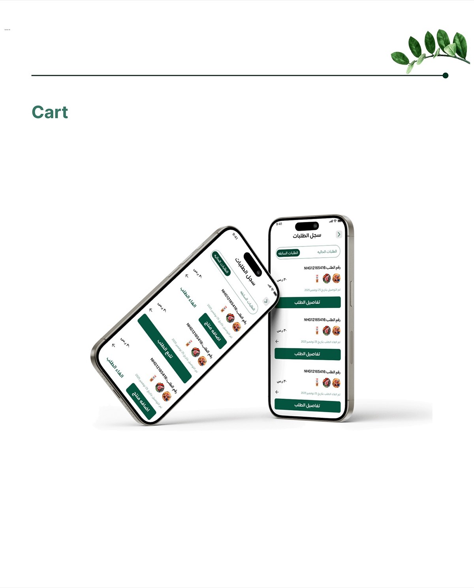
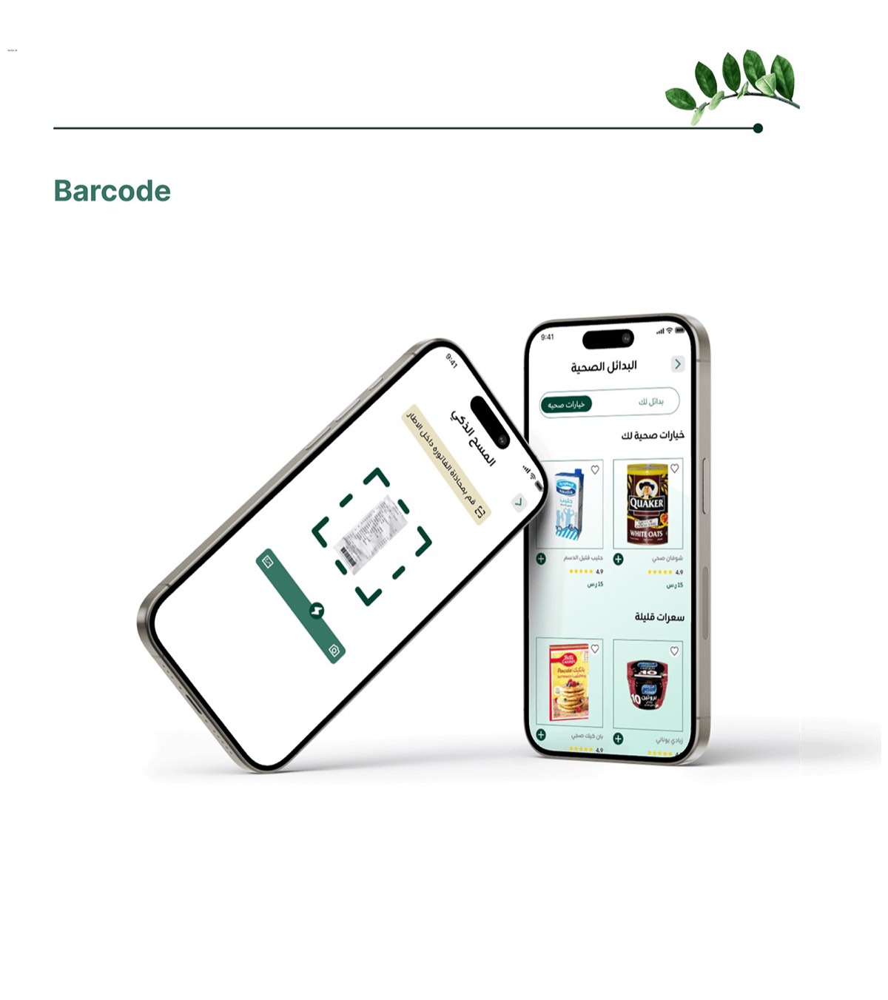
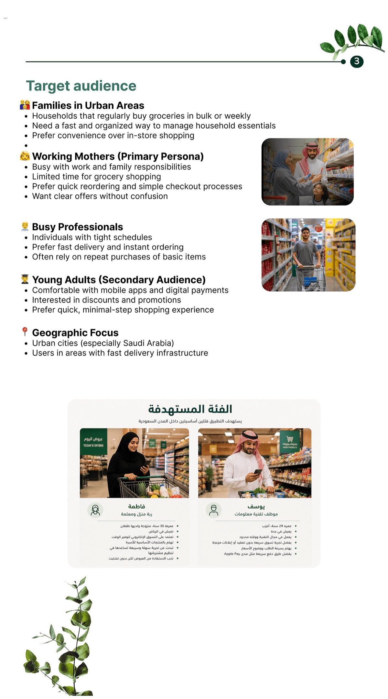
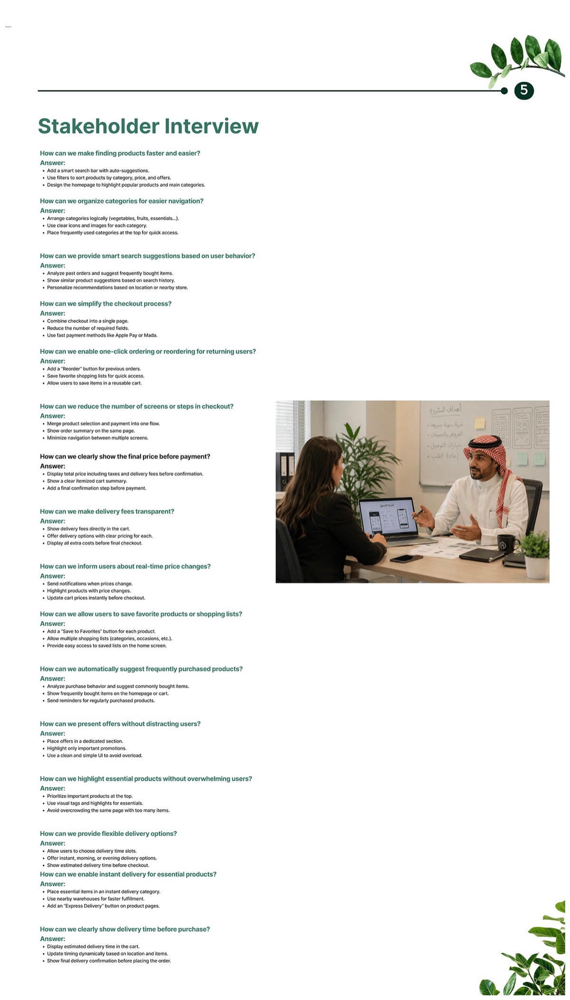
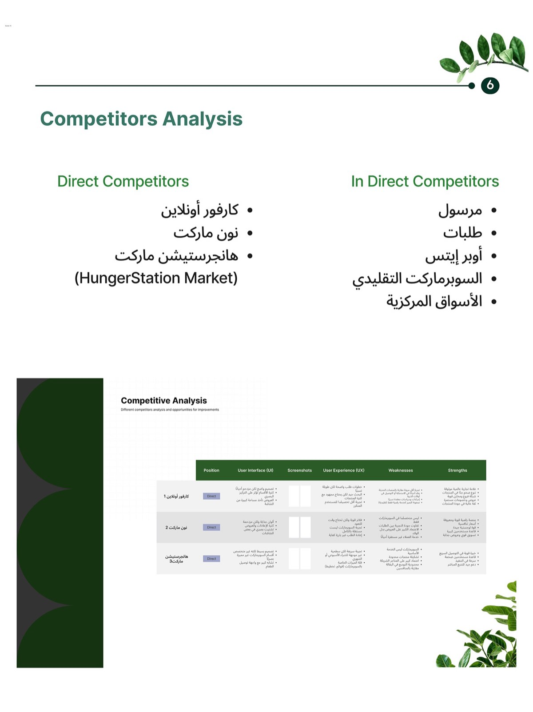
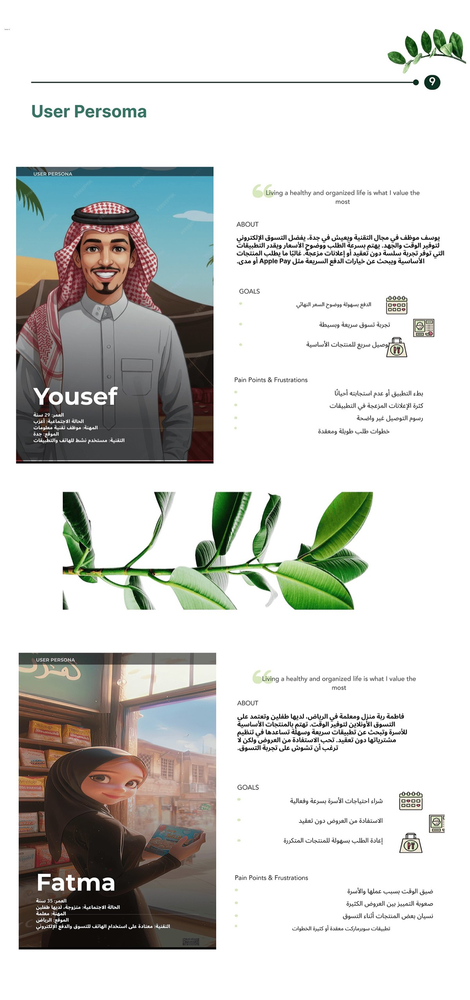
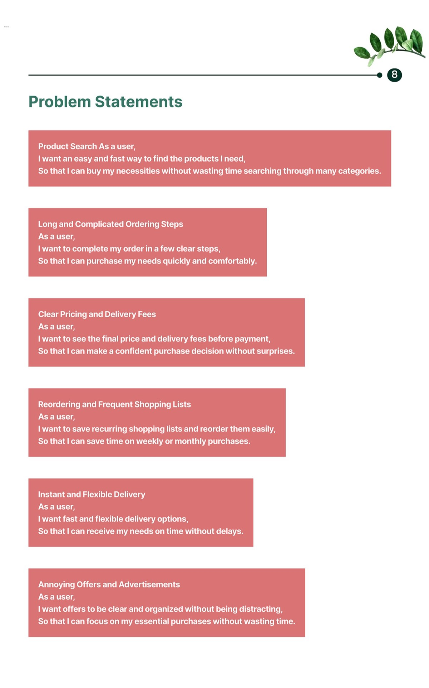
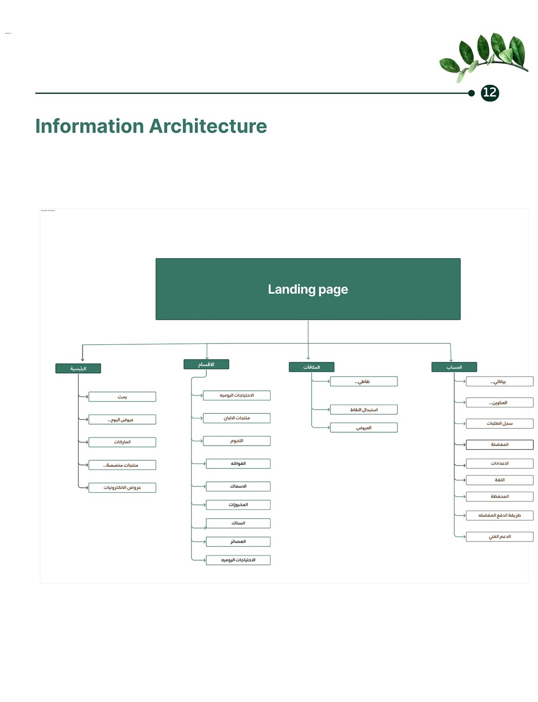
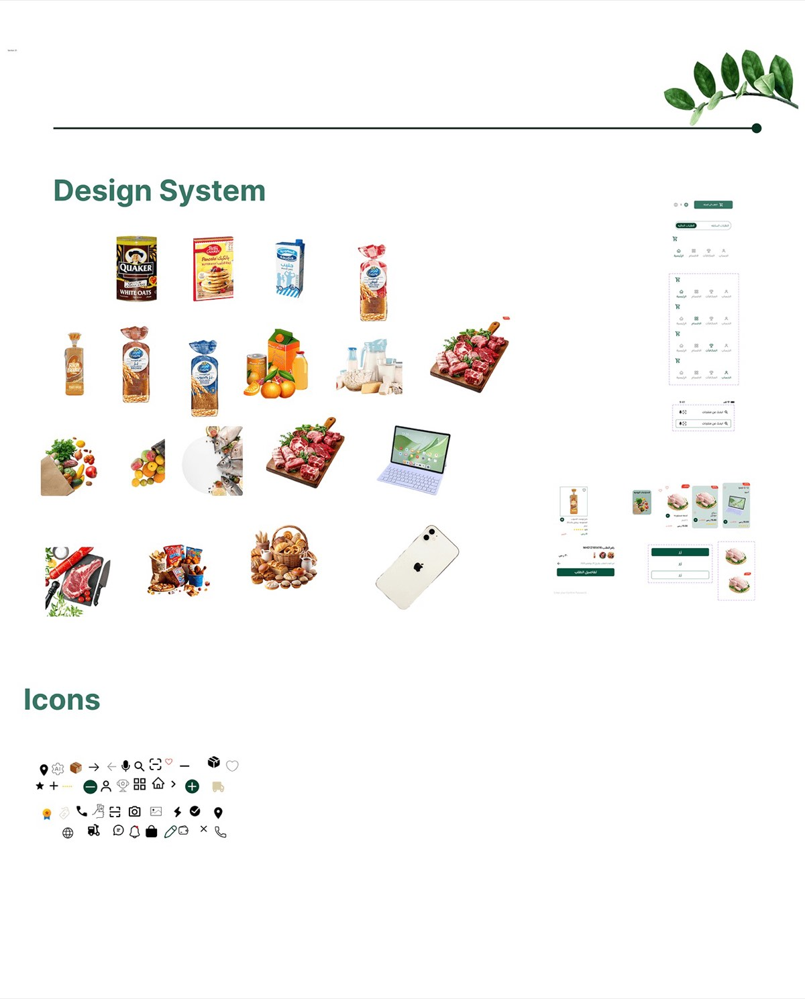
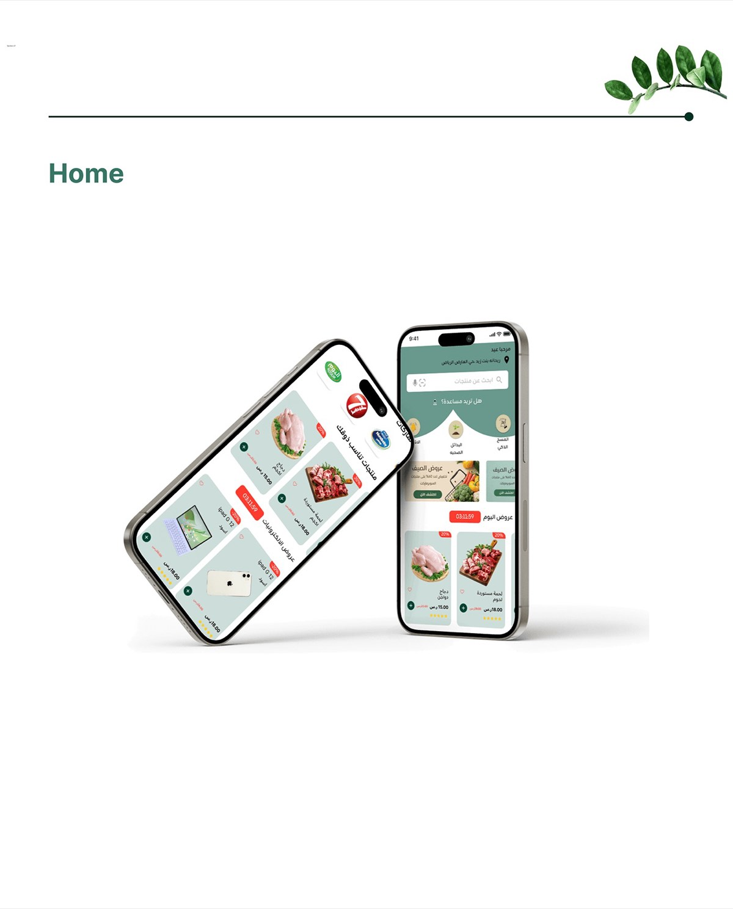

An online grocery app that makes buying the week's essentials simple, fast and organized.
House Basket (سلة البيت) is a UX project for an online grocery application that simplifies and speeds up buying daily essentials — especially for families and individuals living in urban areas.
As people rely more on online shopping, existing apps showed recurring problems: complex checkouts, products that are hard to find, and unclear prices. The goal was a simpler, faster and more organized shopping experience, delivered across 50+ screens.
Previous orders and saved baskets come back with a single “Reorder” button.
Earn points on every order and redeem them for rewards.
Scan a product to find it instantly and add it to the cart.
Follow the order live and chat with support when something is out of stock.





25 boards · research, flows, design system and all screens















